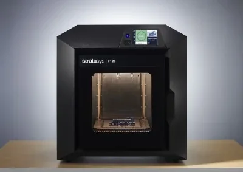

Build volume
254 x 254 x 254 mm (10 x 10 x 10 in)
Advertised dimensions; check usable space and variants.
Entry model of the Stratasys F123 series: same 254 mm cube as the F170 but a smaller cabinet and a much shorter material list.

254 x 254 x 254 mm (10 x 10 x 10 in)
Advertised dimensions; check usable space and variants.
Enclosed build chamber
Published enclosure and chamber-heating notes.
Not recorded in this catalog.
Dated listing, not a live offer. Read the configuration and region.
Understand the hardware, explore compatible changes and find a diagnostic starting point when something goes wrong. Expand the specification sections for every recorded value, condition and original reference.
Dimensions, construction and the hardware that moves the print.
| Property and unit | Published value and conditions | Sources and dates |
|---|---|---|
| Manufacturer & exact marketed model name (verify the exact product identity first) | Stratasys F120, part of the Stratasys F123 Series | 1 source |
| Release date (announcement and actual shipping) | The F123 series spec sheet carried is revision 0721a (July 2021). Stratasys does not print a launch date on it | 1 source |
| Variants & sibling models — and how to tell them apart (spec-contamination risk) | The F120 is the odd one out in the series: smaller cabinet (889 x 870 x 721 mm, 124 kg vs 1,626 x 864 x 711 mm, 227 kg), two external material coil boxes rather than internal spool bays, only two model materials, and no 0.127 mm layer option. Same build size as the F170 but not the same machine | 1 source |
| Property and unit | Published value and conditions | Sources and dates |
|---|---|---|
| Build volume X×Y×Z (mm) — advertised vs actually usable | 254 x 254 x 254 mm (10 x 10 x 10 in) | 1 source |
| Machine footprint (mm) & clearance needed (cable/spool overhang) | 889 x 870 x 721 mm (35 x 35 x 29 in) | 1 source |
| Net weight (kg) | 124 kg (F120) or 227 kg with consumables (F170, F270, F370) | 1 source |
| Frame construction & material | Fully enclosed office/classroom-grade cabinet, factory assembled | 1 source |
| Enclosure: open / enclosed; panel material; door/lid | Enclosed build chamber | 1 source |
Extrusion, heating, leveling and material handling.
Check the F120-specific coil-box type and filament-key seating. The official sequence reconnects the box, substitutes a new box if needed and escalates persistent loading timeouts.
Applies to: F120 uses a different material memory chip from other Stratasys printers; other series’ boxes are not substitutes.
For a material-detection fault associated with an improperly seated blue tube elbow, the manufacturer directs owners to a reseller for the retaining bracket.
Applies to: F120 documented service remedy; confirm the actual elbow fault and correct bracket with the reseller.
| Property and unit | Published value and conditions | Sources and dates |
|---|---|---|
| Officially supported filament list | ABS-M30 and ASA, with SR-30 support material. Notably the F120 does NOT get PLA, FDM TPU 92A or ABS-CF10, and cannot use the 0.127 mm layer height | 1 source |
Firmware, controls, connections and calibration.
| Property and unit | Published value and conditions | Sources and dates |
|---|---|---|
| Input voltage (110/220 V, switch or auto) | 100-132 V / 15 A or 200-240 V / 7 A, 50/60 Hz | 1 source |
| Property and unit | Published value and conditions | Sources and dates |
|---|---|---|
| Firmware base & current version (Klipper fork / Marlin fork / proprietary) | Proprietary Stratasys firmware; print preparation is GrabCAD Print. The F370 additionally carries an Insight software licence and DoD STIG compliance powered by Red Hat Enterprise Linux | 1 source |
| Property and unit | Published value and conditions | Sources and dates |
|---|---|---|
| WiFi (band/standard), Ethernet, USB ports, SD/flash-drive | Wired TCP/IP at 100 Mbps minimum, 100base-T Ethernet, RJ45. Wireless-ready IEEE 802.11 n/g/b with WPA2-PSK or 802.1x EAP, CCMP/TKIP encryption | 1 source |
Published safeguards, support terms and independent evidence.
| Property and unit | Published value and conditions | Sources and dates |
|---|---|---|
| Certifications (UL/ETL/CE/FCC — verify, don't assume) | CE (low-voltage and EMC directives), FCC, EAC, cTUVus, KC, RoHS, WEEE, REACH, RCM | 1 source |
| Property and unit | Published value and conditions | Sources and dates |
|---|---|---|
| Noise: claimed dB and independently measured dB (distance/method) | 46 dB maximum during build, 35 dB idle — manufacturer specification, no distance or method stated, and not an independent measurement | 1 source |
| Property and unit | Published value and conditions | Sources and dates |
|---|---|---|
| Dimensional accuracy measurements (third-party, with numbers) | Parts produced within +/-0.200 mm or +/-0.002 mm/mm, whichever is greater. Manufacturer figure derived from statistical data at 95% dimensional yield; Z accuracy carries an extra -0.000/+slice-height tolerance | 1 source |
This guide presents the catalog’s sourced record for this exact model. Source dates belong to each reference; a page update does not mean every specification has been rechecked.
Prices are dated listing snapshots, with configuration, regional and sale conditions. They are not current offers. Unknown values remain unfilled.
Firmware, variants and available accessories can change. Read the original reference before making a purchase or planning a process.
Firmware, modifications and troubleshooting links are checked against the model and stated hardware or firmware revision. A creator’s compatibility claim is not a fit test by this site. Official troubleshooting describes a diagnostic route; individual reports do not establish a failure rate.
This review did not verify firmware customization or update guidance, printable modifications for this exact model. That is a research gap, not a claim that none exist.